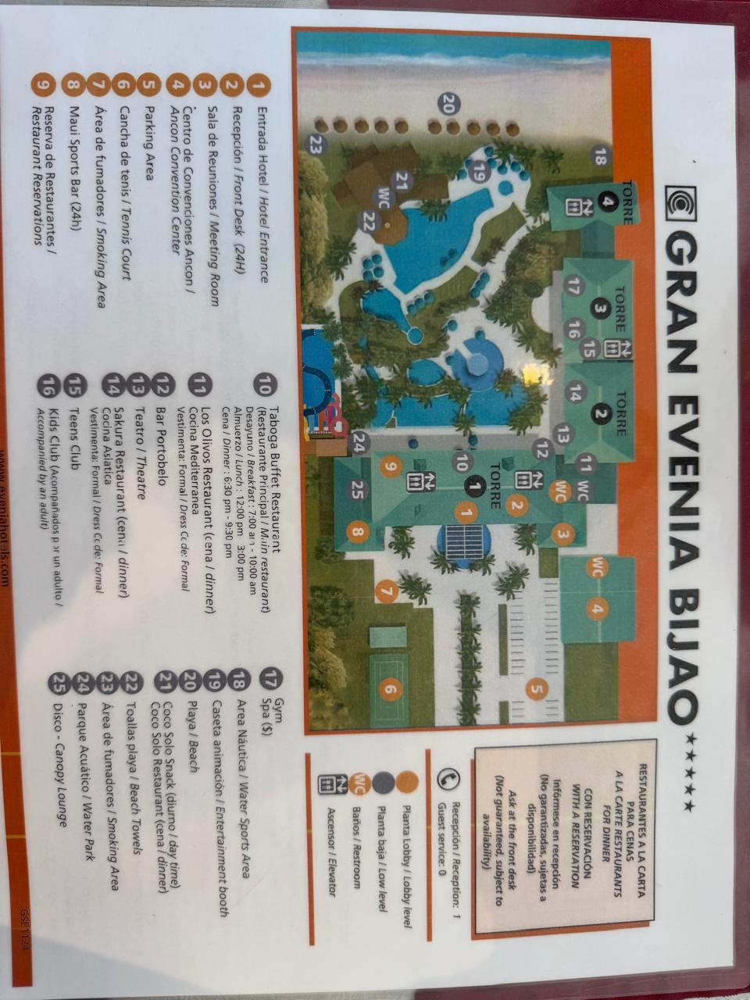

Bienvenidos al Congreso de Enfermería 2025
Un evento para compartir conocimientos, experiencias y formar conexiones significativas entre profesionales y estudiantes del área de la salud.

Misión
Organizar un congreso de enfermería que promueva principalmente el intercambio de conocimientos...

Visión
Buscamos capacitar y formar al grupo de estudiantes de enfermería promoviendo la innovación...

Objetivos del Congreso
Objetivo General
Proporcionar un espacio educativo...
Objetivos Específicos
- Brindar formación teórica y práctica sobre las últimas tendencias...
- Establecer la importancia de influir de manera positiva...
- Desarrollar habilidades de liderazgo y toma de decisiones éticas...
- Promover el trabajo en equipo y la colaboración interdisciplinaria...
- Impulsar el compromiso social y profesional de los estudiantes...

Mapa
Ubicación del evento:
Cronograma de actividades
- Día 1: Registro y apertura
- Día 2: Conferencias y talleres
- Día 3: Clausura y actividades finales

Información General
Lugar: Hotel Gran Evenia Bijao
Fecha: 13 al 16 de Mayo del 2025